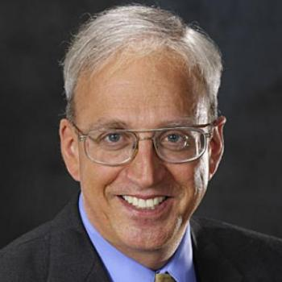
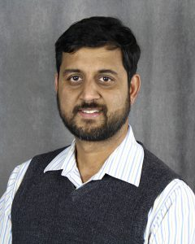

Schedule
| 8:40 - 8:45 | Opening Remarks |
| 8:45 - 9:45 | Keynote 1: William Dally (Stanford & NVIDIA)
“Accelerating Genome Analysis: A Primer on an Ongoing Journey” |
| 09:45 - 10:05 | Sahand Kashani, Stuart Byma and James Larus (EPFL)
IMPACT: Interval-based Multi-pass Proteomic Alignment with Constant Traceback |
| 10:05 - 10:25 | Damla Senol Cali, Jeremie S. Kim, Saugata Ghose, Can Alkan and Onur Mutlu
Nanopore Sequencing Technology and Tools for Genome Assembly: Computational Analysis of the Current State, Bottlenecks and Future Directions |
| 10:25 - 11:00 | Coffee break |
| 11:00 - 11:55 | Invited Talk: Ananth Kalyanaraman (WSU) |
| 11:55 - 12:15 | Xueqi Li (UCSB, KITS)
Scalable In-Memory System for Genomic Analysis |
| 12:15 - 12:35 | Meysam Roodi, Zahra Lak and Andreas Moshovos (Univ. of Toronto)
Accelerating GATK Variant Calling HaplotypeCaller Tool |
| 12:35 - 14:00 | Lunch |
| 14:00 - 15:00 | Keynote 2: Onur Mutlu (ETH, CMU) |
| 15:00 - 15:20 | Jeremie Kim, Damla Senol, Hongyi Xin, Donghyuk Lee, Saugata Ghose, Mohammed Alser, Hasan Hassan, Oguz Ergin, Can Alkan and Onur Mutlu
GRIM-filter: fast seed filtering in read mapping using emerging memory technologies |
| 15:20 - 15:40 | Roman Kaplan, Leonid Yavits and Ran Ginsar (Technion, Israel Institute of Technology)
RASSA: Resistive Pre-Alignment Accelerator for Approximate DNA Long Read Mapping |
| 15:40 - 16:00 | Coffee break |
| 16:00 - 16:20 | Wenqin Huangfu, Shuangchen Li, Xing Hu and Yuan Xie (UCSB)
RADAR: A 3D-ReRAM based DNA Alignment Accelerator Architecture |
| 16:20 - 16:40 | Zheming Jin and Hal Finkel (ANL)
Exploring the Random Network of Hodgkin and Huxley Neurons with Exponential Synaptic Conductances on OpenCL FPGA Platform |
| 16:20 - 16:40 | Meysam Roodi, Zahra Lak and Andreas Moshovos (Univ. of Toronto)
Improving BWA-MEM performance |
| 16:50 - 17:00 | Closing remarks |
Keynote Talks
-

Onur Mutlu, ETH Zurich / CMU
“Accelerating Genome Analysis: A Primer on an Ongoing Journey”
8:45 - 9:45
Talk abstract: Genome analysis is the foundation of many scientific and medical discoveries as well as a key pillar of personalized medicine. Any analysis of a genome fundamentally starts with the reconstruction of the genome from its sequenced fragments. This process is called read mapping. One key goal of read mapping is to find the variations that are present between the sequenced genome and reference genome(s) and to tolerate the errors introduced by the genome sequencing process. Read mapping is currently a major bottleneck in the entire genome analysis pipeline because state-of-the-art genome sequencing technologies are able to sequence a genome much faster than the computational techniques that are employed to reconstruct the genome. New sequencing technologies, like nanopore sequencing, greatly exacerbate this problem while at the same time making genome sequencing much less costly.
This talk describes our ongoing journey in greatly improving the performance of genome read mapping. We first provide a brief background on read mappers that can comprehensively find variations and tolerate sequencing errors. Then, we describe both algorithmic and hardware-based acceleration approaches. Algorithmic approaches exploit the structure of the genome as well as the structure of the underlying hardware. Hardware-based acceleration approaches exploit specialized microarchitectures or new execution paradigms like processing in memory. We show that significant improvements are possible with both algorithmic and hardware-based approaches and their combination. We conclude with a foreshadowing of future challenges brought about by very low cost yet highly error prone new sequencing technologies. -

Invited Talk
-
